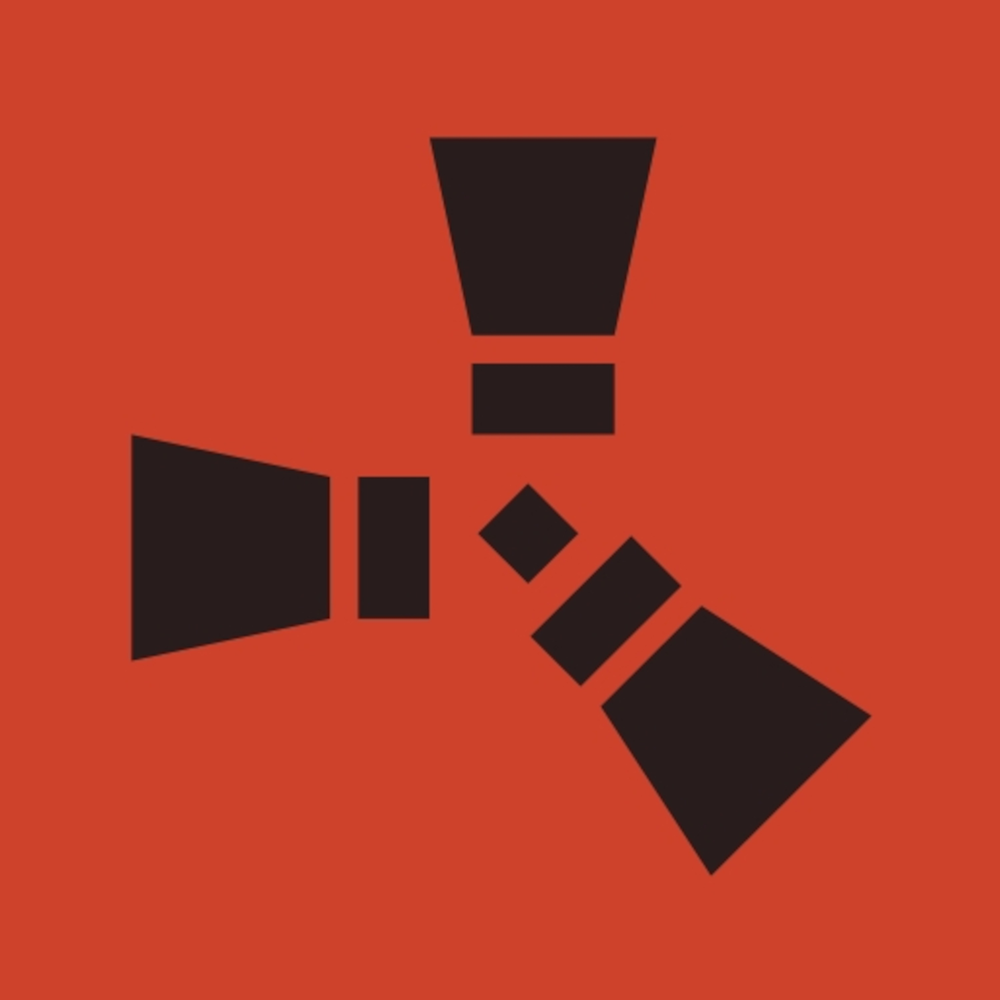
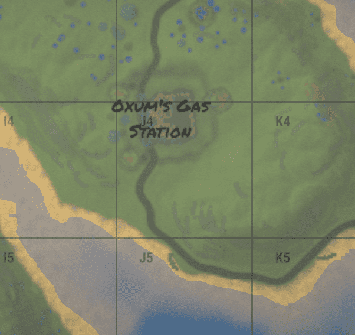
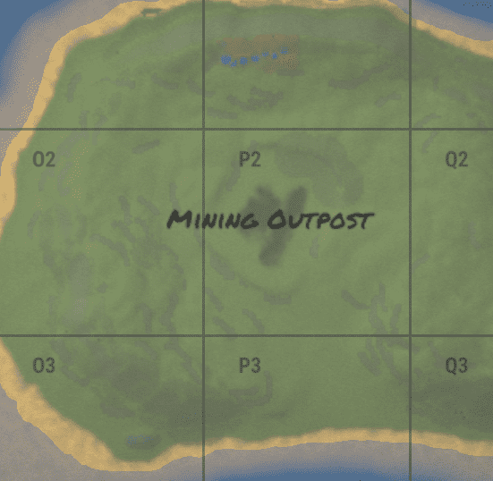
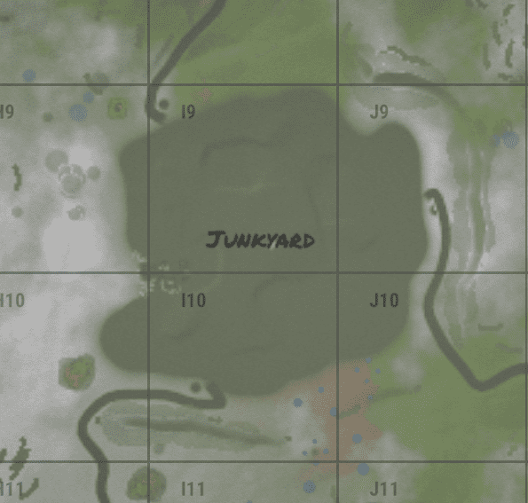
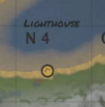

Rust - Симулятор выживания не оснащен обучающим материалом, как и многие другие игры жанра. По этой причине основы жестокой атмосферы игры придется узнавать с помощью метода проб и ошибок. Однако, этот процесс долгий и мучительный. Для того, чтобы не терять время на познание досадных промахов, написан гайд для новичков, помогающий проходить первые этапы игры максимально безболезненно.
Rt- radiation towns
На любых картах объекты спавнятся случайно. Нет ориентиров, присущих каждому серверу. Это относится и к РТ. Изменяться может расположение и количество этих объектов. На самой популярной карте Barren (там FPS лучше) могут быть и склады, цистерны, электростанции, аэропорты, тарелки и военные туннели. Не всегда они все присутствуют, но аэропорт есть почти всегда.

По периметру заправки периодически появляются бочки. В военных грузовиках часто можно найти ящики с едой и водой. В складском помещении, мастерской, пещере и на крыше можно найти обычные ящики. В офисе на столе лежит зелёная ключ-карта, а недалеко стоит военный ящик. В холле на полках часто располагаются ящики с продовольствием.Тоесть из полезного тут есть: Переработчик Зеленая карточка Еда Военный ящик

Данный РТ представляет собой небольшой ангар, внутри которого расставлены полки с ящиками. В данном месте полностью отсутствует радиация, что позволяет игрокам, только зашедшим, на сервер сразу облутать весь склад. Тоесть из полезного тут есть: Переработчик Много ящиков

Представляет собой давно заброшенную свалку, территория которой ограждена колючей проволокой. Перелезть через проволоку нельзя, вы потеряете ХП, но перейти через неё вам помешает невидимая текстура. Свалка имеет девять входов. В данном месте полностью отсутствует радиация, что позволяет игрокам, только зашедшим на сервер, сразу облутать всю локацию и получить максимальное количество лута. Тоесть из полезного тут есть: Переработчик Много ящиков Много бочек Зеленая карточка

Маяк в Rust – это один из немногих монументов, которые можно найти в ходе путешествия на процедурно генерируемых картах (Procedural Map). Определённой точки спавна у этого РТ нет. К тому же, спавнится маяк либо на мелководье, либо на глубоководье (однако это редкость). Во втором случае маяк находится ...на приличном расстоянии, что влечёт за собой определённые последствия. Однако, как правило, конструкция расположена либо вдоль береговой линии, либо в прибрежных районах. Тоесть из полезного тут есть: Пару ящиков